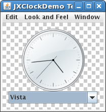

This tutorial describes how to build your own custom components using JXComponent and XComponentUI to simplify the procedure and enforce standard practices for layout and configuration.
While it is not required to know anything before reading this tutorial, it will help if you have a fairly in-depth knowledge of Swing and how Look and Feels work, including UIResources, as well as SwingX and the SwingX Painters.
In this tutorial we will be going through the steps needed to create the JXClock, a simple component that displays time in a graphical manner. The clock will follow the MVC approach used by the rest of Swing providing default model and view implementations.
The first step to making a new component is to create the controller, this is a simple class that
should extend JXComponent.
package org.jdesktop.swingx;
public class JXClock extends JXComponent {
public JXClock() {
updateUI();
}
}
This is all we need to create a new component, notice the similarity to components that extends
JComponent directly with the call to updateUI(). Without this
call JComponent subclasses would not have their backgrounds painted, and similarly
JXComponent subclasses will not have their background or foreground painters painted.
It's all well and good having a controller if you don't have anything to control, lets create a model.
package org.jdesktop.swingx.clock;
public interface ClockModel extends DynamicObject {
public Calendar getTime();
}
As you can see the model is very simple, it contains a single method used to return a Calendar
instance. The returned calendar should be treated as either an immutable object or as a fresh object depending on
the implementation. Essentially any changes to the returned Calendar should not affect future calls to
getTime. The reason for this rule is to ensure that proper event notification occurs for
observers of the ClockModel, the observable interface is provided by the DynamicObject
interface. This class provides the standard methods for adding and removing ChangeListeners
from an object so that change notification can occur.
Once we have a model interface we can create our abstract base class which provides the boilerplate
code for the majority of implementations of a ClockModel. This is standard practice in
Swing and generally will involve implementing the observer methods and providing ways of triggering events. Luckily
for us you will find a common base class which already provides the observer functionality needed in my incubator
space under the name AbstractDynamicObject. We will add a couple of other utility methods
to the class to aid in the creation of sub classes and then we are done.
package org.jdesktop.swingx.clock;
import java.util.Calendar;
import org.jdesktop.swingx.event.AbstractDynamicObject;
public abstract class AbstractClockModel extends AbstractDynamicObject implements ClockModel {
protected Calendar getCalendarInstance() {
Calendar c = Calendar.getInstance();
return c;
}
protected Calendar unmodifiableCalendar(Calendar c) {
return new UnmodifiableCalendar(c);
}
}
You'll notice that these two methods provide the needed functionality to either return a new
calendar instance of return an unmodifiable calendar instance from the getTime method.
UnmodifiableCalendar is a simple calendar instance that wraps another calendar but throws
an exception if any attempt is made to adjust its fields.
The next step is to create a default implementation for the ClockModel so
that it can be used easily without having to do too much work. We will write this default model to provide the most
common use-case of a simple clock that shows the current time and updates itself when the time changes. As we want
the model to change to show the current time we will need a periodic timer to notify us that it is time to change
the model time. I won't go into too much detail as to the inner workings of the DefaultClockModel but
will say that is is implemented in a way that decouples it from the
specific timer used and provides predictable results between event notifications and calls to getTime().
If you want more details the source code is well documented.
Now that we have our default implementation of the model we can bind it to our controller by adding the following code:
public class JXClock extends JXComponent {
// ...
private ClockModel model;
public JXClock() {
this( -1);
}
public JXClock(long initialValue) {
super();
DefaultClockModel model = new DefaultClockModel(initialValue);
model.start();
init(model);
}
public JXClock(ClockModel model) {
init(model);
}
protected void init(ClockModel model) {
setModel(model);
updateUI();
}
// ...
}
Notice that care has been taken to avoid problems that occur when non-private methods are called from within a constructor (see this java specialist newsletter for why we do this). We also provide the getter and setter methods for accessing the model:
public ClockModel getModel() {
return model;
}
public void setModel(ClockModel model) {
if (model == null) {
throw new NullPointerException("model cannot be null");
}
ClockModel old = getModel();
if (old != null) { // can be null when getModel is overriden or on first call.
old.removeChangeListener(modelAdapter);
}
this.model = model;
model = getModel();
if (model != null) {
if (modelAdapter == null) {
modelAdapter = new ModelAdapter();
}
model.addChangeListener(modelAdapter);
}
firePropertyChange("model", old, model);
}
Care should be taken when writing methods like this to respect subclasses who may override methods
like getModel. We also expose the models observer implementation allowing observers to
register interest in the controller and not have to worry about changes to the underlying model reference. This is a
standard practice followed by most of the swing components. Some code that is not shown is the
fireStateChanged, add/remove/getChangeListeners and the code for
the ModelAdapter which simply forwards events from the model to registered observers.
Now we have a controller and a model we can add some temporary code to see if what we have is
working. We create the following main method within JXClock and run to see the time
displayed as text on our screen.
public static void main(String[] args) {
SwingUtilities.invokeLater(new Runnable() {
public void run() {
JXClock clock = new JXClock();
clock.setForegroundPainter(new AbstractPainter<JXClock>() {
@Override
protected void doPaint(Graphics2D g, JXClock c, int width, int height) {
g.setColor(c.getForeground());
g.setFont(c.getFont());
Calendar cal = c.getTime();
g.drawString(String.valueOf(cal.getTime()), 50, 50);
}
});
clock.addChangeListener(new ChangeListener() {
public void stateChanged(ChangeEvent e) {
((JXClock) e.getSource()).repaint();
}
});
new TestFrame("Clock demo", clock).setVisible(true, 300, 150);
}
});
}
To get the clock to run we simply add a painter to the clock that will display the time and add a change listener that will be notified when the time changes. If all goes well we should have something that looks like this and will update every second:
It should be noted that both the foreground colour and font of the text is taken from the component and match the default font and colour for the rest of the look and feel. This you get for free when extending JXComponent, to be more specific it's what you get when you use XComponentUI which is the base class for all UI delegates used to display JXComponents.
There are a number of steps to creating a view for our component. The first is to define the public API all views should implement. This is done in swing by defining an abstract base class for all UI delegates to extend, this base class represents what each view should be able to achieve. In the case of our clock we will not add any more methods than the standard ComponentUI class provides.
package org.jdesktop.swingx.plaf;
import org.jdesktop.swingx.JXClock;
public abstract class ClockUI<C extends JXClock> extends XComponentUI<C> {
public ClockUI() {
super("Clock");
}
}
The String passed to the constructor of XComponentUI is required and provides the prefix
for lookups of UI properties withing the look and feels UIDefaults table. For example the foreground
property will be associated with Clock.foreground. The generic part of the class defines what
JXComponent subclass this UI delegate will be interested in and is used as the type for passing the
source to most methods in XComponentUI.
At this point we are ready to let our controller know what its view will look like (API wise), this involves providing the ui class id for the view in the controller. This is as simple as adding this method to JXClock:
private static final String uiClassID = "ClockUI";
@Override
public String getUIClassID() {
return uiClassID;
}
For completeness sake we will also add the method below to allow easier use of the ui.
@Override
public ClockUI getUI() {
return (ClockUI) super.getUI();
}
Now that we have a base class for our clocks view we can create a basic implementation of this class. This base class
should generally provide a default view onto the controller and model and make it easy for subclasses to create
their own views without having to reinvent the wheel. In swing each of these basic implementations is prefixed with
Basic and reside in the basic subpackage. We will follow this example for our basic
implementation, we will also move the repaint and text clock support form the example above into this class where it
belongs.
package org.jdesktop.swingx.plaf.basic;
public class BasicClockUI<C> extends ClockUI<C> {
private static BasicClockUI<JXClock> SINGLETON;
public static ComponentUI createUI(JComponent c) {
if (SINGLETON == null) {
SINGLETON = new BasicClockUI<JXClock>();
}
return SINGLETON;
}
private Adapter adapter;
public BaiscClockUI() {
}
@Override
protected Painter<? super C> createForegroundPainter(C c) {
return new AbstractPainter<C>() {
@Override
protected void doPaint(Graphics2D g, C c, int width, int height) {
g.setColor(c.getForeground());
g.setFont(c.getFont());
Calendar cal = c.getTime();
g.drawString(String.valueOf(cal.getTime()), 50, 50);
}
};
}
@Override
protected void installListeners(C c) {
super.installListeners(c);
c.addChangeListener(createChangeListener(c));
}
protected ChangeListener createChangeListener(C c) {
return getAdapter(c);
}
private Adapter getAdapter(C c) {
if (adapter == null) {
adapter = new Adapter();
}
return adapter;
}
protected void stateChanged(C c) {
c.repaint();
}
@UIListener
private static class Adapter implements ChangeListener {
@SuppressWarnings("unchecked")
public void stateChanged(ChangeEvent e) {
JXClock c = (JXClock) e.getSource();
BasicClockUI<JXClock> ui = (BasicClockUI<JXClock>) c.getUI();
ui.stateChanged(c);
}
}
}
There are a few new concepts within the above code and a lot of boilerplate missing. This is not to aid in
readability, the above class is complete and will display the JXClock if assigned by the ui. The
boilerplate code (i.e. installUI and uninstallUI) has been implemented for you in a manner
that provides the most common case and allows you to override the minimum possible to customise what you need. Take
the UIListener annotation applied to the ChangeListener Adapter class, this
marks the listener as view managed (similar to how UIResource works) and allows
XComponentUI to remove it automatically for you when the view is uninstalled. It's worth noting at this
point that XComponentUI will also clean up any added components, the foreground and background
painters, the border and the font.
Now that we have a basic view we can attatch it by default to the controller, to be used in the case where no other
view has been found. We can do this in two ways, one we use the SwingX LookAndFeelAddons API to insert our own
properties into the installed look and feels UIDefaults tables whenever they are populated, another way
is to use the extension hooks provided in JXComponent to provide a default look implmetation for use
when no other instance can be found. Both of these methods can be used at the same time so don't worry about
conflicts. To provide a default view instance simply override the createUI method in
JXComponent like so:
@Override
protected ComponentUI createUI() {
return org.jdesktop.swingx.plaf.basic.BasicClockUI.createUI(this);
}
We can now replace our main method in JXClock with this to have a working demo.
public static void main(String[] args) {
SwingUtilities.invokeLater(new Runnable() {
public void run() {
new TestFrame("Clock Demo", new JXClock()).setVisible(true, 300, 150);
}
});
}
Well that was a lot of work to simply get the time printed onto the screen, don't worry it was all worth it and was
a lot less effort than it would have been to do the same without JXComponent and
XComponentUI. In the next tutorial we'll look into creating a clock view that shows graphically what
the time is instead of the simple string representation we have now. The clock will be inherently resolution
independent and scalable without any extra work from us but then that's for next time.
